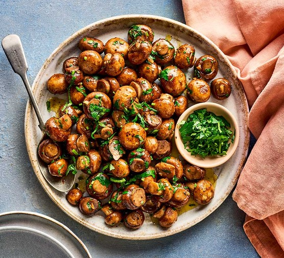

Garlic Mushrooms

Description
Garlic Mushrooms are simply great serves as a side dish, on toast or in pasta.
Ingredients
- 40g Butter
- 500g White Mushrooms
- 2 Garlic Cloves
- Large handful of parsley leaves
Steps
- Cook the Mushrooms in a frying pan with butter
- With the mushrooms glistening and cooked through, toss through the garlic.
- Stir in most of the parsley
- Serve as a side dish, on toast or tossed through spaghetti, with a sprinkling of the remaining parsley.